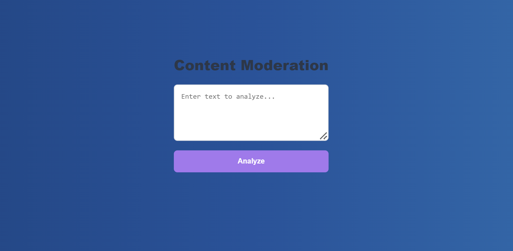
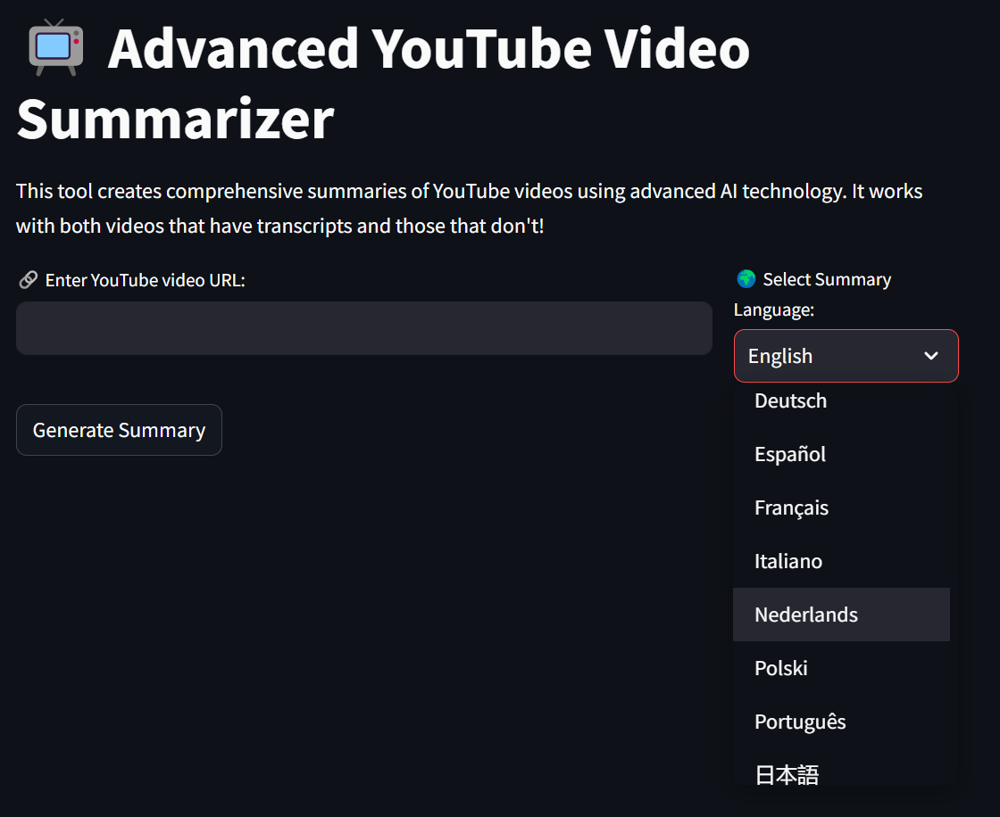

Hello, I am Abhiram Reddy, a
Passionate about bridging technology and user needs, I am a full-stack web developer with a robust foundation in computer science and a zeal for continuous learning. Specializing in creating seamless, intuitive digital experiences, my expertise spans front-end and back-end development, including technologies like JavaScript, React, and Node.js. I thrive on problem-solving and innovation, aiming to contribute to projects that push technological boundaries. Eager to collaborate with like-minded teams, I am on a quest to develop impactful web solutions that drive success and foster growth.
Welcome to My World!
My Technical Skills
- Web Development
- Programmer
- Software Development
Programming Languages
JavaScript
HTML
CSS
Java
C
C++
My Projects
Take a look at some of my works.

NLP FOR INCLUSIVE DISCOURSE: DETECTING AND MITIGATING HATE SPEECH
Description of Project
Know More

Smart Summarizer: AI-Enhanced Multi-Language Summaries for YouTube Videos
Description of Project
Know MoreContact Me
Contact Information
Let's connect!